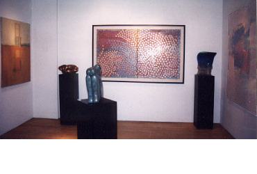

|
CREATIVE
RESOURCE ART AND IMAGING GALLERY
Birmingham, Michigan NOTATIONS
Karen Jacobs, Carol Sams, Karen Peterson March 2 - April 10, 1999 |
||
| Installation Photos Courtesy of Kelly Darke | ||
|  | ||
|
. Jacobs paintings encourage a sense of perceived mysteriousness. Through the textured surfaces and build up of glazes, one experiences a greater illusion of transparency and translucency of the surface than is generally developed in acrylic medium. Her paintings are somewhat liquid and metamorphic, at once a landscape, immersed in plains of colour abstractions... modalities difficult to identify. Jacobs recent works are embodied with a gathering silence, thought provoking and contemplative. Veils of colour are scumbled over one another -- cool over warm, warm over cool, dark over light and light over dark, until the final illusion of a soft, deep surface appears. Jacobs art education spans three decades -- Florida State University; Maryland School of Art and Design, New Orleans Academy of Fine Arts; and the Mississippi Art Colony, and she has enjoyed countless public and private exhibitions and awards. C.R.A.I.G.
|
||